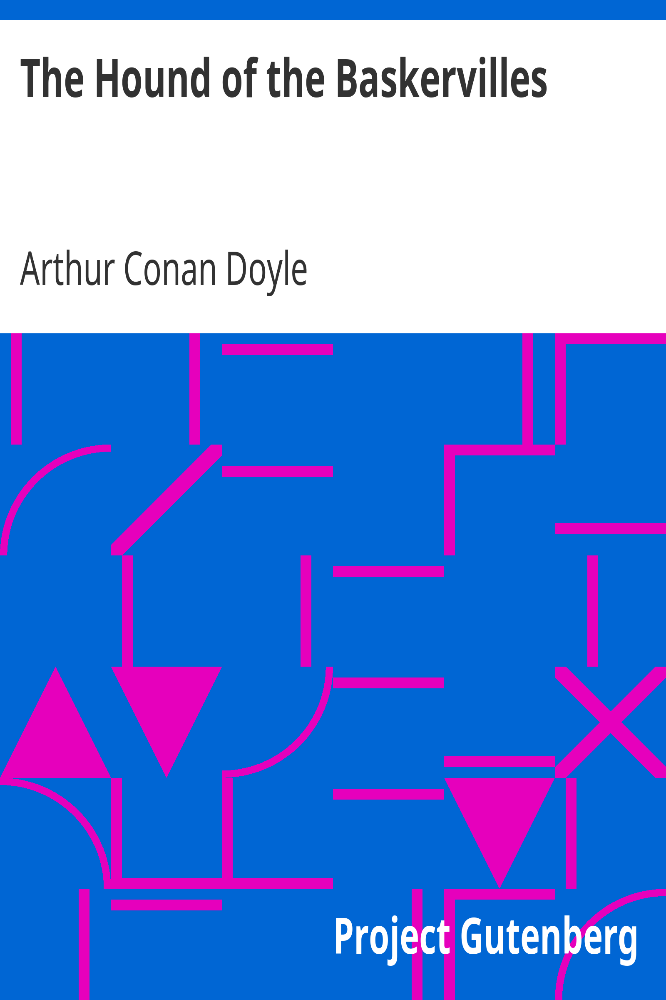
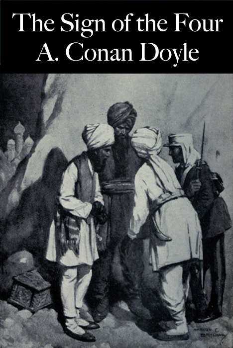
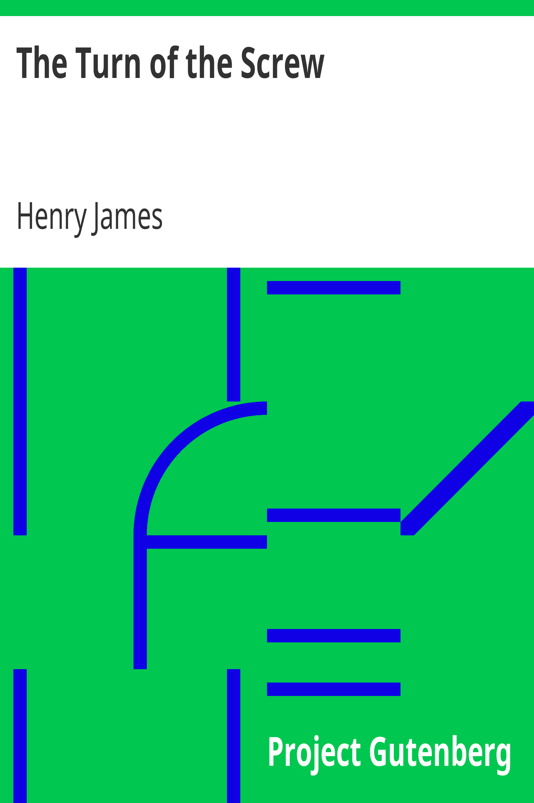
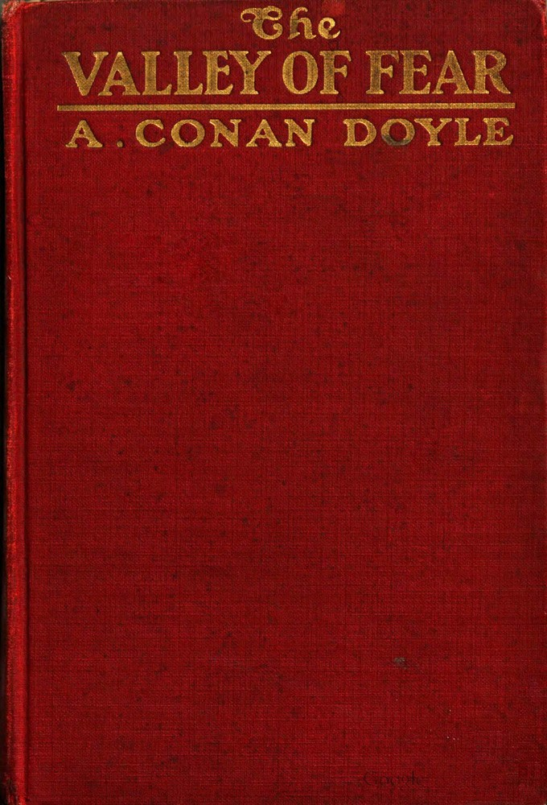

Livros de Suspense

The Hound of the Baskervilles
Arthur Conan Doyle
Mistério
Sherlock Holmes investiga um mistério envolvendo uma antiga maldição e um cão demoníaco nos pântanos da Inglaterra.
Abrir Livro 📖

The Sign of the Four
Arthur Conan Doyle
Mistério
Sherlock Holmes e Dr. Watson desvendam um caso complexo envolvendo um tesouro escondido e assassinato em Londres.
Abrir Livro 📖

The Turn of the Screw
Henry James
Mistério sobrenatural
Uma governanta é contratada para cuidar de duas crianças em uma mansão isolada e passa a enfrentar eventos sobrenaturais e ambíguos.
Abrir Livro 📖

The Valley of Fear
Arthur Conan Doyle
Mistério
Um mistério envolvendo a morte de um homem em uma mansão isolada.
Abrir Livro 📖